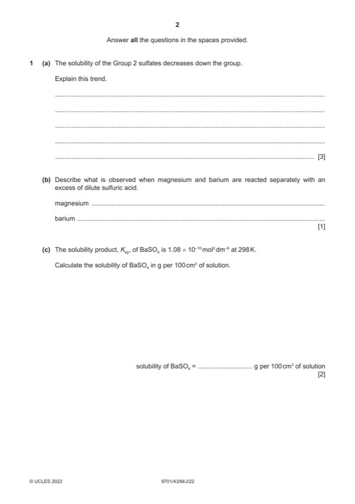

Question 1

Original paper page 2
Part 1(a) — solution
Answer: OR Hsol becomes (more) endothermic / (more) positive · OR Hsol = Hhyd – Hlatt expression AND reaction becomes less exothermic
- [M1] Hlatt and Hhyd decrease / both become less exothermic / less negative 3
- [M2] Hlatt decreases / changes less/becomes less exothermic by a smaller extent OR Hhyd decreases / changes
- [M3] Hsol becomes less exothermic / less negative
Mark points
- [M1] Hlatt and Hhyd decrease / both become less exothermic / less negative 3
- [M2] Hlatt decreases / changes less/becomes less exothermic by a smaller extent OR Hhyd decreases / changes
- [M3] Hsol becomes less exothermic / less negative
Part 1(b) — solution
Mg: fizzing 1
Ba: (fizzing and) white solid/ppt forms
Mark points
- Include the ideas shown in the solution above.
Part 1(c) — solution
- [M1] solubility of BaSO4 2
- [M2] = 1.04 10–5 233.4 / 10 = 2.43 10–4 (g per 100 cm3 of solution) min 2sf
Mark points
- [M1] solubility of BaSO4 2
- [M2] = 1.04 10–5 233.4 / 10 = 2.43 10–4 (g per 100 cm3 of solution) min 2sf
Part 1(d)(i) — solution
- 1473 = 180 + 503 + 965 + Hof – 2469 3
- [M1] correct five values used [1]
- [M2] only correct five values used [1]
- [M3] correct signs and evaluation [1]
Mark points
- 1473 = 180 + 503 + 965 + Hof – 2469 3
- [M1] correct five values used [1]
- [M2] only correct five values used [1]
- [M3] correct signs and evaluation [1]
Part 1(d)(ii) — solution
- BaSO4 is more negative/bigger 2
- as Ba2+ is smaller OR Ba2+ has a larger charge
- stronger force of attraction between the ions
Mark points
- BaSO4 is more negative/bigger 2
- as Ba2+ is smaller OR Ba2+ has a larger charge
- stronger force of attraction between the ions
Part 1(e)(i) — solution
- [M1] Go = 0 so T = Hro / So 2
Mark points
- [M1] Go = 0 so T = Hro / So 2
Part 1(e)(ii) — solution
- [M1] So = (203 + (70 8) + (2 192)) – (427 – (2 95)) = +530 J K–1 mol–1 3
- [M2] Go = Ho – TSo
- [M3] Go = 133 – (298 0.530) = –24.9 kJ mol–1 ecf 1dp min
Mark points
- [M1] So = (203 + (70 8) + (2 192)) – (427 – (2 95)) = +530 J K–1 mol–1 3
- [M2] Go = Ho – TSo
- [M3] Go = 133 – (298 0.530) = –24.9 kJ mol–1 ecf 1dp min